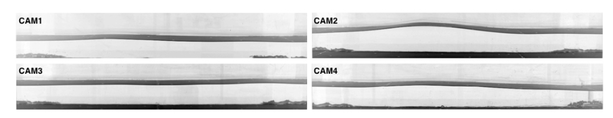
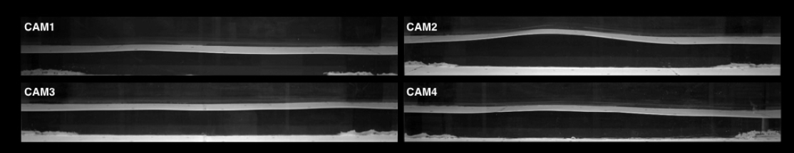

Journal Week 43
Table of Contents
- Referencias
- 2026-10-20
- [15:30] Referencia para medir con cámaras laterales: Redor et al. (2021)
- [15:40] Excedencia de crestas en las tres iteraciones y rotura entre sensores → reporte
- [16:30] Pendiente: testear el índice de rotura con la cámara de costado
- [16:45] Día 2: excedencia de crestas también en el tramo de muchos forzados de los combinados
- [17:30] PDFs por medición del Día 1 y modelo empírico de crestas saturadas
- [18:00] Sp de S1 entre ωm y ων: Burgers con choques de ancho finito (Ricard & Falcon 2023)
- [18:30] Sp de S1 con parámetros libres y choques de Poisson
- [18:25] Reporte de intermitencia (S1, Día 1): teoría de ruido de disparo de olas coherentes
Referencias
2026-10-20
[15:30] Referencia para medir con cámaras laterales: Redor et al. (2021)
Idea: medir la superficie libre en la cuba grande con cámaras laterales a través de la pared de vidrio. Referencia a seguir:
- I. Redor, H. Michallet, N. Mordant y E. Barthélemy, Experimental study of integrable turbulence in shallow water, Phys. Rev. Fluids 6, 124801 (2021). doi:10.1103/PhysRevFluids.6.124801, arXiv:2210.04638.
- Detalle de la técnica: I. Redor et al., Analysis of soliton gas with large-scale video-based wave measurements, Exp. Fluids 61, 216 (2020), y la tesis de Redor (Univ. Grenoble Alpes, 2019).
Montaje del paper (sección de métodos, figs. 1, 3 y 4):
- Canal de 33,73 m × 0,55 m, paredes laterales de vidrio en paneles de 1,92 m separados por postes de 8 cm.
- 7 cámaras Full HD (1920 × 1080) sincronizadas, a 20 fps; cada una filma un panel entero. Píxel ≈ 1 mm; cubren 14 m del canal.
- Imágenes rectificadas con una grilla de calibración apoyada contra el vidrio de adelante.
- Contraste: fondo del canal pintado de blanco y pared de atrás pintada de negro. Con la cámara a un ángulo adecuado, la línea de contacto agua-vidrio queda como borde entre dos imágenes refractadas: la del fondo blanco (refractada por la superficie libre) y la de la pared negra (refractada por el agua junto al vidrio). Con ese borde nítido logran resolución sub-píxel, mejor que 0,1 mm.
- La fig. 4 del paper está en escala de grises invertida (por eso la superficie se ve negra). Abajo, la figura tal como sale en el paper y la versión re-invertida, que debería parecerse a la imagen cruda: fondo oscuro (pared negra), franja clara a la altura de la superficie y franja clara abajo (fondo blanco). Si además le ajustaron el contraste, la re-inversión no lo recupera.


Para nuestra cuba (a probar):
- ¿Fondo negro y pared blanca, al revés que en el paper? En principio también daría un borde nítido, con el contraste invertido; no está verificado.
- Nuestro “fondo” bajo los sensores es la rampa impresa: habría que pintarla o cubrirla.
- Con pocos mm de profundidad sobre la rampa (h ≈ 3,5 mm bajo S1), la imagen del fondo refractada por la superficie va a ser más angosta: a confirmar con una prueba.
- Antes de pintar nada, probar con cartulinas blancas y negras y una sola cámara.
[15:40] Excedencia de crestas en las tres iteraciones y rotura entre sensores → reporte
Todo está en el reporte del día: reportedia4.pdf (23 p.). Lo compila Tercera iteración/Día 4/Reporte/ (latexmk deja el PDF directo en Assets). Códigos y resultados en Tercera iteración/Día 4/.
- Excedencia de crestas como la Fig. 15 de Redor et al. (2021), contra Rayleigh, Tayfun y Tayfun–Fedele: Días 1 y 2, Primera y Segunda iteración.
- Rotura de sensor en sensor (las olas van de S3 a S1): en el Día 1 asomeramiento entre S3 y S2 y rotura entre S2 y S1. En S1 hay un corte de la cola de crestas, que también aparece en la Primera y la Segunda. En el Día 2 los tres sensores ya están en la rompiente, y en S1 Hm0 ≈ h (saturación).
- Comparación con la literatura: el patrón coincide con Al Khalili et al. (2025, Coast. Eng. 199, 104745; canal 1:50) y con Battjes & Groenendijk (2000). Alturas H/Hs comparadas con su Fig. 17: S3/S2 del Día 1 ≈ B1–B3 (Forristall), S1 ≈ B5–B6 (corte en H/Hs ≈ 1,2–1,4); S1 del Día 2 vuelve a Rayleigh.
- Índice de rotura de Tayfun (2006), γb = 1,20 ξ0,27: la lognormal de ξ0 en S3 coincide (σlnξ ≈ 0,25 contra 0,246), es spilling y no rompe nada antes de S2. Pero predice la rotura después de S1, y en S1 las olas llegan rotas (se pierde 64–80 % de la energía). Cierra con γb efectivo ≈ 0,4–0,5 o con asomeramiento no lineal + disipación viscosa: a confirmar midiendo dónde rompe.
- Correcciones al índice (sección 8.1 del reporte): con asomeramiento no lineal + γ de olas irregulares (Goda A = 0,12 o Ruessink 2003), en el nivel 3,60 cierra (rompe el 74–98 % antes de S1); en el 3,95 no (≤ 39 %, frente a 64–81 % de energía perdida). Faltan h medida, un sensor entre S2 y S1 y la cámara.
[16:30] Pendiente: testear el índice de rotura con la cámara de costado
[ ]Cuando haya mediciones espaciales con la cámara lateral (montaje de Redor et al. 2021, entrada de las 15:30), ubicar el punto de rotura ola por ola y medir H(x) entre S2 y S1. Con eso, testear el índice de rotura de Tayfun (2006) / Kaminsky–Kraus y sus correcciones (Goda 2010, Ruessink 2003, asomeramiento no lineal), y separar la rotura de la disipación viscosa. Detalle en el reporte del día, sección 8.
[16:45] Día 2: excedencia de crestas también en el tramo de muchos forzados de los combinados
- Hasta ahora el Día 2 usaba solo el tramo Bonneton (
t_bon_s). Ahora se suma el de muchos forzados (t_muchos_s, 310–340 s) como tanda aparte (reporte, Fig. “Día 2, tramo de muchos forzados” y tabla). Se ve como los forzados modulados del Día 1: por debajo de Rayleigh, meseta y Tayfun por debajo (0,4–0,8). En S1 no hay corte, a diferencia del tramo Bonneton de la misma medición, y As apenas llega a ≈ −0,2.
[17:30] PDFs por medición del Día 1 y modelo empírico de crestas saturadas
- Un PDF por medición del Día 1 con todos los resultados, para elegir la principal del trabajo:
Tercera iteración/Día 4/Por medición Día 1/PDFs/(README al lado). Curtosis ahora con puntos y barras (10 bloques). - Diagnóstico de Sp (pendiente local): en las 8 mediciones el rango “satura en 1” cae en el codo entre el régimen de τ chico (ζ6 ≈ 3,5–4,5) y la caída cerca de Tp/2, donde todos los ζp pasan por 1 a la vez. Solo en los random hay una meseta real cerca de 1 (Canal365: [150, 231] ms, ζ6 = 1,07). Hay que elegir de nuevo los rangos.
- Modelo empírico para la excedencia de crestas saturadas en S1 (reporte, sección “Modelo empírico”): una Weibull compuesta, análoga a la de Battjes & Groenendijk (2000), ajusta con rms 0,01–0,02 en log P, contra 0,14–0,23 de Tayfun. Propuesto para el Bonneton: k1 ≈ 2,4, k2 ≈ 3,5, transición en A ≈ 1,4. En validación cruzada da rms 0,06–0,09.
[18:00] Sp de S1 entre ωm y ων: Burgers con choques de ancho finito (Ricard & Falcon 2023)
- Sección nueva en el reporte del día. ων/ωm = 1,5–2,5 en las 8 mediciones del Día 1: no hay separación de escalas, y el rango “que satura en 1” es un cruce (codo), no una meseta. Ese cruce también lo tienen los subrogados FT/IAAFT: viene del espectro.
- El Burgers modificado de Ricard & Falcon, sin parámetros libres (a, t* y Γ de los frentes de S1), reproduce ζp(τ) y da ⟨ζp⟩ → ≈ 1,3. Cierra en los Bonneton con nivel 3,60 (dentro de 0,1–0,2). En los random ζp sigue creciendo: no son de Burgers. t*ν = 2/πων ≈ 1,5 t* de los frentes.
- Propuesta para el trabajo: mostrar ζp(τ) contra el modelo y Sp/Spth en lugar de ζp en un rango. Medición principal: Bonnetonbienprofundidad360 o Bonnetoncustom360.
[18:30] Sp de S1 con parámetros libres y choques de Poisson
- Reporte del día, subsección “Con parámetros libres” (sección 11), y en los PDFs por medición. Con la forma de Poisson, Spsh = (1 − e−Γτ)⟨|Δη|p⟩, el rms en ζp(τ) baja de 0,6–0,75 (sin parámetros libres) a 0,19–0,30, y se reproduce la caída de ζp hacia 0 para τ ≳ 150 ms.
- El Γ ajustado (10–16 s⁻¹ en los Bonneton) coincide con ωm en rad/s, no con los frentes por segundo (0,9–1,8). La saturación la fija la rampa entre frentes (1/ωm ≈ 70 ms). Pero con a, t* y Γ medidos y λ = ωm no alcanza (rms 0,52–0,80): falta la forma completa de la ola. Sigue en el reporte de intermitencia.
[18:25] Reporte de intermitencia (S1, Día 1): teoría de ruido de disparo de olas coherentes
- Reporte aparte: reporteintermitencia.pdf. Lo compila
Tercera iteración/Día 4/Intermitencia/Reporte/, con el PDF directo en Assets; códigos enIntermitencia/Códigos/. Es una versión con las mediciones procesadas hasta ahora; se completa regenerando conresumen.py. - Sp de 2, 3 y 4 puntos, nulos FT/IAAFT, jerarquía de modelos (Burgers bifractal, Ricard & Falcon, tanh exacto, perfil medio, Poisson) con sus derivaciones.
- Teoría propuesta: η = Σ ai ψ(t − ti) + fondo gaussiano, con el núcleo ψ por deconvolución y sin parámetros libres. Reproduce ζp(τ) de n = 2, 3, 4 para τ ≥ 20 ms (rms 0,10–0,29 con n = 2). Intermitencia por ciclo útil chico (Γw ≈ 0,07); saturación en τ ~ w ≈ 1/ωm (explica el λ ≈ ωm de Poisson). Los tiempos de Poisson empeoran el acuerdo en los Bonneton.
- [18:45] Reporte de intermitencia completo con las 8 mediciones (21 p.). Modelos analíticos de ζp contra p: con log-Poisson, ζp = h_∞p + C(1 − βp), los Bonneton con nivel 3,60 dan C ≈ 1,0–1,1 para n = 2, 3, 4 (codimensión de eventos puntuales: los frentes) y h_∞ creciendo con n (0,02 → 0,3 → 0,37: ancho finito + cresta curva).